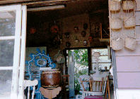
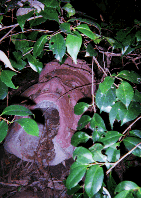
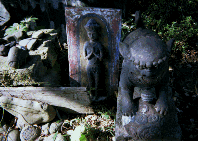
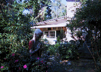
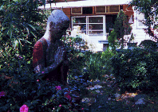
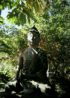
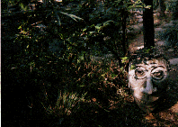
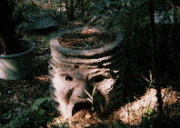
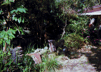

アリタキアーボレータム/埼玉県越谷市
  
埼玉は越谷の久伊豆神社の参道に面して奇妙な植物園がある。その名はアリタキアーボレータム。ま、植物園というか正確には樹木園なのだが、どうも普通の植物園とは明らかに一線を画した雰囲気が漂うスポットがあるので、ひとつそこの話を。
まず最初に説明させて頂くと、ここは植物学者のアリタキ氏（たぶん故人）が研究用に作った個人的な植物園で、いわゆる公営や観光用の植物園ではないので商売っ気がまったく無い（入場は一応有料）。雰囲気としては「見たかったら、見ればあ〜」というクレヨンしんちゃんのようなスタンスで構えており、一般の開放時期も春と秋のみとなっている。
この植物園、温帯性の樹木が約3500株あるらしいのだが樹木自体はそんなに珍しいモノとは思えず（いや、中にはきっと貴重なものや珍しいものがあったに違いない、でもそんなことは問題ではないのだ）、奥の方はただの鬱蒼とした森で特に珍しい植物園ではない。で、何がそんなにナニなのかというと、園内に点在するオブジェ群がナニなのだ。
ここの先代のオーナーのアリタキ氏、植物のフィールドワークのために世界中を飛び回っていた人物で、その際、世界各地で見かけたモノを自分で作って園内に飾ってあるのだ。
例えば仏像、頭の尖ったお釈迦様は明らかにタイやミャンマーのスタイルのもの。植木鉢はイタリアのボマルッツオ庭園（妖怪庭園）の怪物の顔を模したもの。その他南方のお面や奇妙な獅子などが木々に埋もれるようにして佇んでいる。
この植物園、現在は二代目が跡を継いでいるのだが、この二代目もまた曲者。園内の研究棟で芸術（彫刻）をやらかしてしまっているのだ。従って園内は先代の彫像と二代目のオブジェが入り交じりビザ−ルな雰囲気に包まれている。
  
ちなみにこのアリタキ式幻想庭園は入場料を払わずとも入口から丸見えなのでオブジェ群のみが見たい方は外からそっと覗くだけでもオッケー。ただし入場料を払うと二代目氏との楽しいコミュニケーションが漏れなく付いてくる事をお忘れなく。
私が訪れた時も気候が良かったせいか二代目氏、独りで自作の歌などを歌っており、ちょっと近付きがたい雰囲気を醸し出しておりました。
その時貰った黄ばんだパンフレットは昭和47年の印刷でした。
  
1998.11
珍寺大道場 HOME